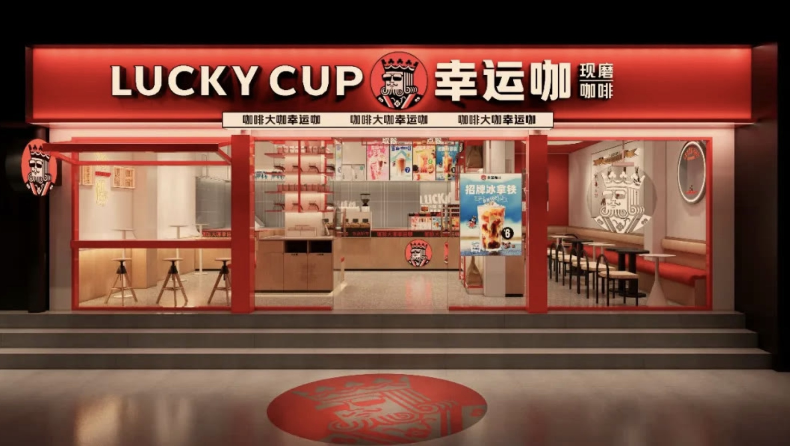
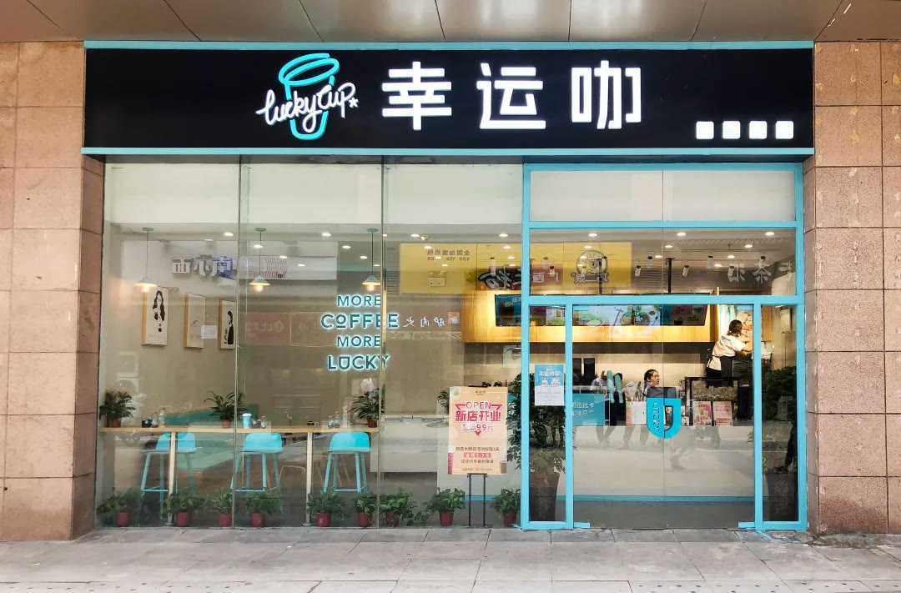
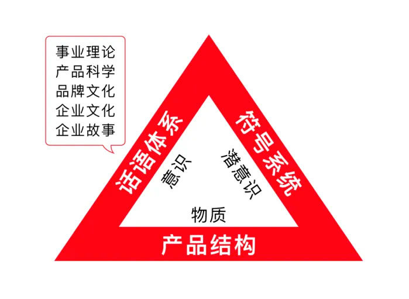
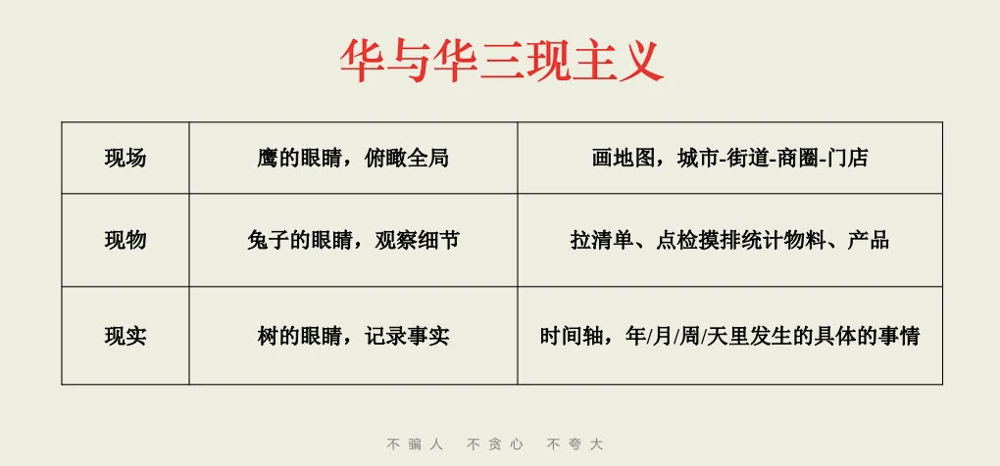
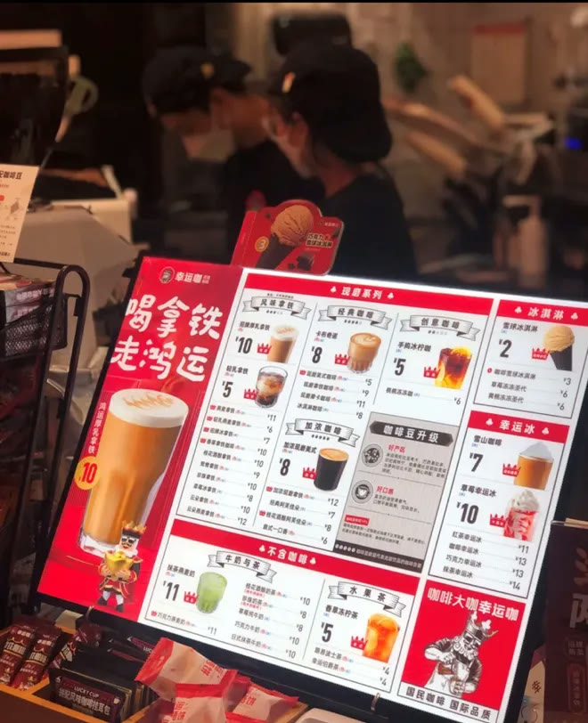

01 · 上场
先确定大众咖啡的事业战略
新品牌不能只从名字和装修开始。项目先判断价格、客群、产品与渠道，使幸运咖的品牌表达建立在清晰生意模型上。

02 · 资产
从0到1建立品牌储蓄罐
角色、色彩、品牌语言和门店识别统一出现，使每一次装修与传播投入都能留下可重复的品牌资产。

03 · 门店
用持续改善打造赚钱的专业咖啡店
门店设计同时考虑发现、点单、出品和座位效率。所谓专业感必须与更顺畅的经营和更低的选择成本同时成立。

04 · 产品
产品结构是底层逻辑
菜单需要明确引流、利润和形象产品，并用价格与推荐顺序下达购买指令。产品开发不与品牌传播分离。

05 · 开发
品牌顾问也要进入产品开发
项目从消费场景与购买理由出发参与新品，使产品、命名、包装与推广从一开始就互相支持。
